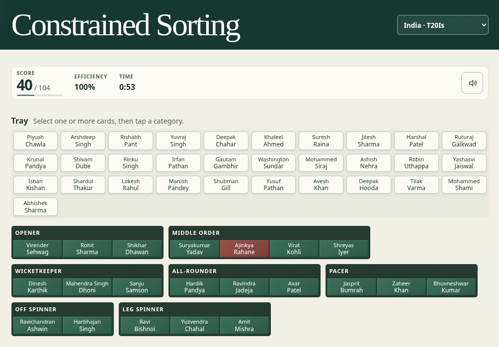

The 1999 research
In 1999, Sriram Natarajan worked with students at the National University of Singapore on the research described in the unpublished paper The Method of Constrained Sorting. The computer program let people select and regroup words on a single screen.
In a free sort, people decide what belongs together. The same set of countries could be grouped by region, population, or political system. A constrained sort gives people a structure to work toward by naming the categories, showing how close their groups are to a reference sort, or both.
Across two studies, category names and feedback helped people sort closer to the reference groups. Feedback also encouraged people to keep trying. When both forms of guidance were available, people’s performance was more consistent across sorting tasks.
Expertise and consensus
Ask several experts to sort the same cards independently and you have an inexpensive way to see how they organize a subject. Experts can disagree because they notice different features or because an item genuinely fits more than one group. Counting how often each pair lands together shows where views agree and differ. Those counts can also be used to build a consensus tree, with smaller groups nested inside broader ones.
Where agreement is strong, an idealized expert sort can serve as a benchmark for novices. For example, a beginner’s first placements in a cricket sort can show which playing roles they recognize. Their revisions show how they use feedback. That gives a window into how they organize their knowledge of cricket, alongside other skills such as explaining a choice or judging a match situation.
Designing the game
In November 2026, Sriram Natarajan returned to the project with Prime Factor 64 and Fog Sweep 64 as examples of short, portable learning games. The work began with a small prototype that could be tried quickly and changed in response to what felt awkward.
A small board to learn from
The early “Bass” deck used twelve words and three groups. Bass could suggest either a fish or an instrument, which made it a useful test of how the rest of the board informs a choice. Early conversations explored a 3 × 4 layout, groups with uneven lengths, multiselect, and ways to remove cards from a group. Muse’s notes drew attention to the 1999 interface. As items came together, the board itself showed the progress of the sort.
Layout took several rounds of testing on phones and wider screens. A group that fit on a desktop could wrap awkwardly on a phone once a scrollbar or group handle took up space. The board eventually used the full width for the Tray and let groups wrap to fit. When cards moved, a short animation showed where they landed.
From discovering groups to applying knowledge
Giving players the category names up front shifted the task toward applying what they knew. Separate controls for grouping and moving cards gave way to a direct action. Select one or more cards, then tap the category box to place them. To bring a card back, select it and tap the Tray. The same actions work for one card or a batch.
Feedback became immediate. Cards turn pine green or clay red as soon as they land, so players can see which placements to revisit. A correct placement earns two points on the first move, one on the second, and zero after that. We also introduced move efficiency, the percentage you get by dividing the number of cards currently placed by the number of card moves made. Moving three cards together counts as three card moves.
The sound design went through its own revisions. A quiet tap marks selection, and short placement sounds distinguish correct and incorrect moves. A batch plays one cue, so moving several cards at once stays quiet. A fully correct board earns a rising fanfare that resolves into a sustained chord.
Indian men’s cricket
Cricket was a natural first subject. Sriram Natarajan follows the game, as do many of his Indian friends, who were likely to try the app.
The first large deck used 49 players and seven uneven groups. It grew into four format-specific decks. Some assignments change with the format, such as Sachin Tendulkar in the Test middle order and among the ODI openers. The rosters favor recognizable players from 1971 onward and use the roles most useful for this particular sort. Feedback on Jayant Yadav led to placing him among the Test all-rounders. That discussion is a good example of why a deck’s answer key deserves review.
The first push included 59 Test, 62 ODI, 52 T20I, and 63 Indian IPL players.
First release
Quick demo comes first in the picker and shows how to select one or more cards. The empty Tray disappears and reappears as a return target when a placed card is selected. A compact finish card lets the player review the finished arrangement and play again.

For the first release, we moved the deck data out of the app and into separate JSON files under games/. The app loads the deck the player chooses, and each deck can be edited independently. A small build script also makes a standalone page with just the Quick demo deck for interface reviews.
To propose a deck, start with the twelve-card example used in Quick demo. Its category names and card lists are the template for new decks. Download the Bass sample JSON
Sriram Natarajan supplied the research background, chose the direction, and playtested the interface. Sol (GPT-6.1 Sol Extra High) implemented the web versions.
Second commit
The project got its own home page, following the layout of Prime Factor 64. It gives the Quick demo and each cricket deck a direct link. The home and game pages use a smaller title and a logo showing a card above a sorting tray. A screenshot from the India Tests deck shows the game in play. The rules now use the same language for every deck and explain how to select items, move them, and return them to the tray.
The IPL deck grew from 63 to 99 players by adding 36 overseas players. The Test deck grew from 59 to 76, including Gundappa Viswanath, MAK Pataudi, and all four members of India’s classic spin quartet. It used a separate Left-arm Orthodox category and grouped wrist spinners such as Bhagwat Chandrasekhar and Kuldeep Yadav together. View the second push on GitHub.
Third push
The Tests deck split pace bowlers by bowling arm and grouped spinners by bowling action. Off-spinners and left-arm orthodox bowlers shared Finger Spin. Shorter labels made the eight boxes easier to scan. View the third push on GitHub.
The rules now explain placement, scoring, and move efficiency in separate paragraphs. The links below the rules use the game’s button styling.
Fourth update
All four cricket decks now use the same seven labels. They are Opener, Middle, Keeper, All-rounder, Pacer, Finger Spin, and Wrist Spin. The Tests deck returns to one Pacer group.
The ODI deck grew from 62 to 70, and the T20I deck from 52 to 58. Kuldeep Yadav and Varun Chakaravarthy joined both decks. Their addition to T20I completes India’s final 2026 World Cup squad in the deck. The ODI additions include 1983 final player of the match Mohinder Amarnath, and the T20I additions also include three pace bowlers from the 2007 final.
Fifth update
Kris Srikkanth and VVS Laxman now have the same short names in Tests and ODIs. Long surnames fit on one line, and the board uses less vertical space on phones in landscape.
Sixth update
Which Neighbourhood? brings the game back to Singapore, where the original sorting research took place. It has 30 place cards across Bedok, Queenstown, Serangoon Gardens, Tampines, Tiong Bahru, and Toa Payoh. Each neighbourhood has five cards drawn from everyday places and local heritage.
Seventh update
Soccer - Premier League A asks players to sort 50 names by club. The ten clubs come from the 2026–27 table after Matchweek 10, and each has five cards, including its captain and a goalkeeper.
Eighth update
A deck catalog now supplies the home page’s links and tells the shared game page which deck to load. Browse decks takes players back to the home page. New decks can be added without editing the game page.
Technical history
The historical diff archive lets you reconstruct eight stages of the web game, from early board layouts to the first release. It identifies which versions were saved directly and which were recovered from test copies.
The public repository starts with the playable app and cricket decks in the initial push. From that release onward, you can follow changes in the GitHub commit history.